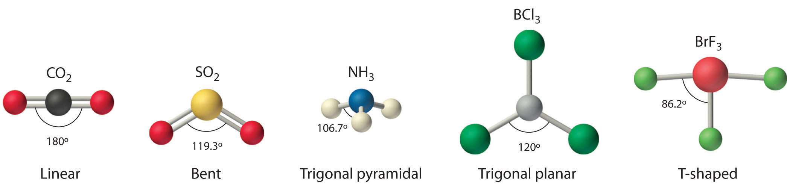
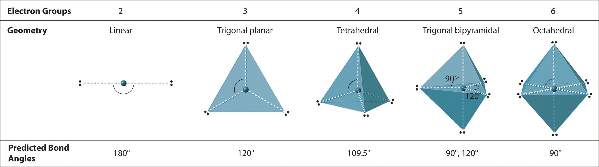
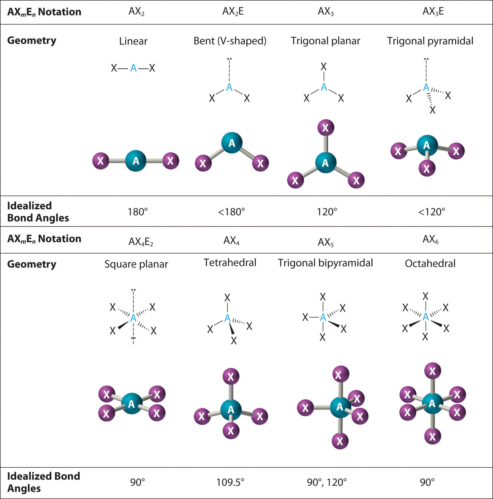
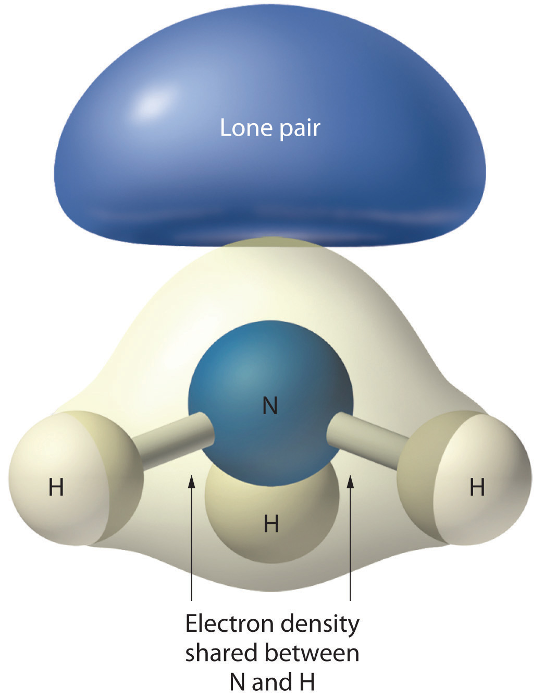
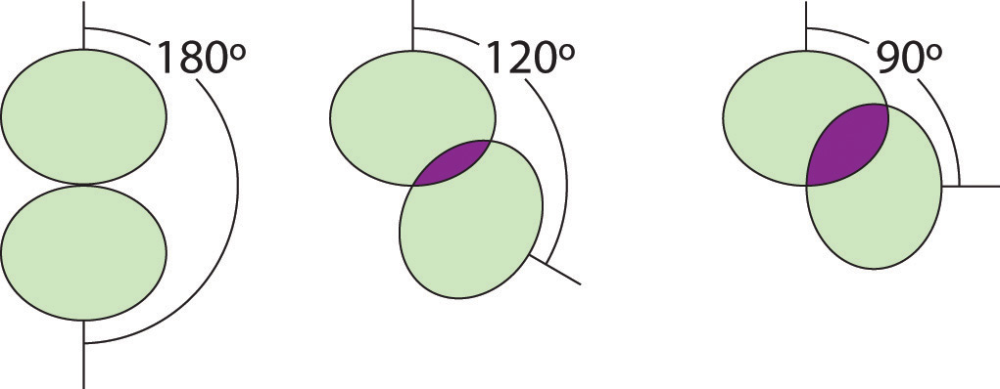
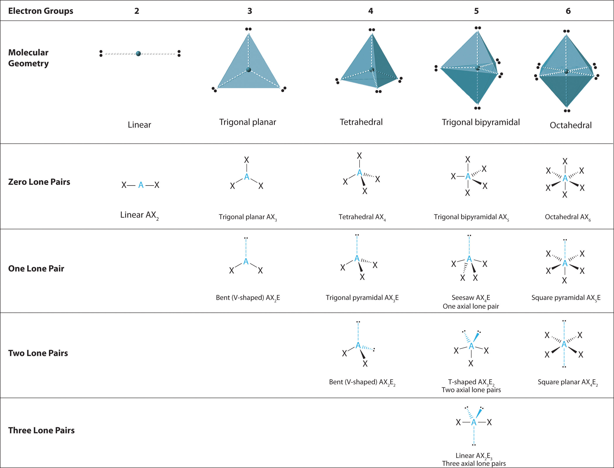
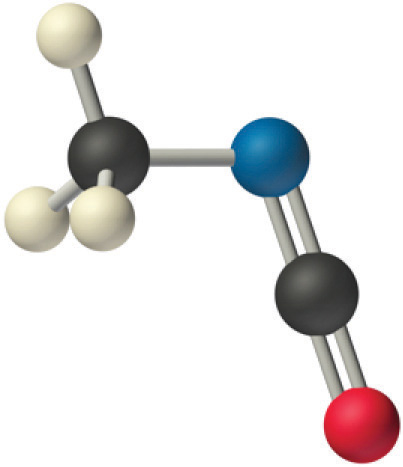
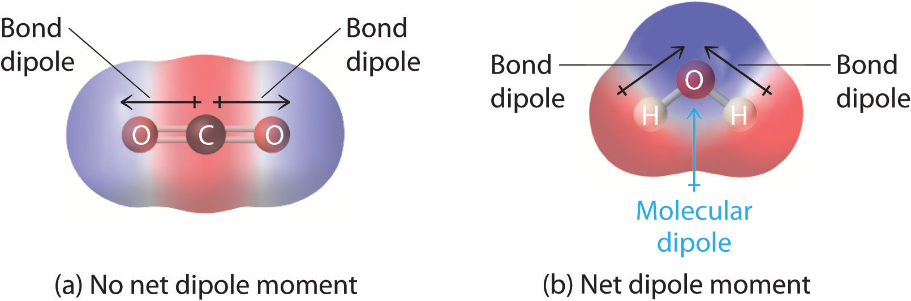
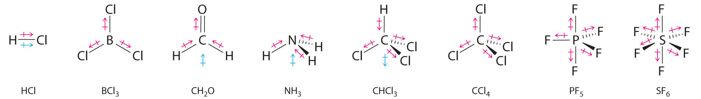

The Lewis electron-pair approach described in Chapter 8 "Ionic versus Covalent Bonding" can be used to predict the number and types of bonds between the atoms in a substance, and it indicates which atoms have lone pairs of electrons. This approach gives no information about the actual arrangement of atoms in space, however. We continue our discussion of structure and bonding by introducing the valence-shell electron-pair repulsion (VSEPR) modelA model used to predict the shapes of many molecules and polyatomic ions, based on the idea that the lowest-energy arrangement for a compound is the one in which its electron pairs (bonding and nonbonding) are as far apart as possible. (pronounced “vesper”), which can be used to predict the shapes of many molecules and polyatomic ions. Keep in mind, however, that the VSEPR model, like any model, is a limited representation of reality; the model provides no information about bond lengths or the presence of multiple bonds.
The VSEPR model can predict the structure of nearly any molecule or polyatomic ion in which the central atom is a nonmetal, as well as the structures of many molecules and polyatomic ions with a central metal atom. The VSEPR model is not a theory; it does not attempt to explain observations. Instead, it is a counting procedure that accurately predicts the three-dimensional structures of a large number of compounds, which cannot be predicted using the Lewis electron-pair approach.
Lewis electron structures predict the number and types of bonds, whereas VSEPR can predict the shapes of many molecules and polyatomic ions.
We can use the VSEPR model to predict the geometry of most polyatomic molecules and ions by focusing on only the number of electron pairs around the central atom, ignoring all other valence electrons present. According to this model, valence electrons in the Lewis structure form groups, which may consist of a single bond, a double bond, a triple bond, a lone pair of electrons, or even a single unpaired electron, which in the VSEPR model is counted as a lone pair. Because electrons repel each other electrostatically, the most stable arrangement of electron groups (i.e., the one with the lowest energy) is the one that minimizes repulsions. Groups are positioned around the central atom in a way that produces the molecular structure with the lowest energy, as illustrated in Figure 9.1 "Common Structures for Molecules and Polyatomic Ions That Consist of a Central Atom Bonded to Two or Three Other Atoms" and Figure 9.2 "Geometries for Species with Two to Six Electron Groups".
Figure 9.1 Common Structures for Molecules and Polyatomic Ions That Consist of a Central Atom Bonded to Two or Three Other Atoms
The VSEPR model explains these differences in molecular geometry.
Figure 9.2 Geometries for Species with Two to Six Electron Groups
Groups are placed around the central atom in a way that produces a molecular structure with the lowest energy. That is, the one that minimizes repulsions.
In the VSEPR model, the molecule or polyatomic ion is given an AXmEn designation, where A is the central atom, X is a bonded atom, E is a nonbonding valence electron group (usually a lone pair of electrons), and m and n are integers. Each group around the central atom is designated as a bonding pair (BP) or lone (nonbonding) pair (LP). From the BP and LP interactions we can predict both the relative positions of the atoms and the angles between the bonds, called the bond anglesThe angle between bonds.. Using this information, we can describe the molecular geometryThe arrangement of the bonded atoms in a molecule or a polyatomic ion in space., the arrangement of the bonded atoms in a molecule or polyatomic ion. This procedure is summarized as follows:
We will illustrate the use of this procedure with several examples, beginning with atoms with two electron groups. In our discussion we will refer to Figure 9.2 "Geometries for Species with Two to Six Electron Groups" and Figure 9.3 "Common Molecular Geometries for Species with Two to Six Electron Groups*", which summarize the common molecular geometries and idealized bond angles of molecules and ions with two to six electron groups.
Figure 9.3 Common Molecular Geometries for Species with Two to Six Electron Groups*
*Lone pairs are shown using a dashed line.
Our first example is a molecule with two bonded atoms and no lone pairs of electrons, BeH2.
1. The central atom, beryllium, contributes two valence electrons, and each hydrogen atom contributes one. The Lewis electron structure is
2. There are two electron groups around the central atom. We see from Figure 9.2 "Geometries for Species with Two to Six Electron Groups" that the arrangement that minimizes repulsions places the groups 180° apart.
3. Both groups around the central atom are bonding pairs (BP). Thus BeH2 is designated as AX2.
4. From Figure 9.3 "Common Molecular Geometries for Species with Two to Six Electron Groups*" we see that with two bonding pairs, the molecular geometry that minimizes repulsions in BeH2 is linear.
1. The central atom, carbon, contributes four valence electrons, and each oxygen atom contributes six. The Lewis electron structure is
2. The carbon atom forms two double bonds. Each double bond is a group, so there are two electron groups around the central atom. Like BeH2, the arrangement that minimizes repulsions places the groups 180° apart.
3. Once again, both groups around the central atom are bonding pairs (BP), so CO2 is designated as AX2.
4. VSEPR only recognizes groups around the central atom. Thus the lone pairs on the oxygen atoms do not influence the molecular geometry. With two bonding pairs on the central atom and no lone pairs, the molecular geometry of CO2 is linear (Figure 9.3 "Common Molecular Geometries for Species with Two to Six Electron Groups*"). The structure of CO2 is shown in Figure 9.1 "Common Structures for Molecules and Polyatomic Ions That Consist of a Central Atom Bonded to Two or Three Other Atoms" .
1. The central atom, boron, contributes three valence electrons, and each chlorine atom contributes seven valence electrons. The Lewis electron structure is
2. There are three electron groups around the central atom. To minimize repulsions, the groups are placed 120° apart (Figure 9.2 "Geometries for Species with Two to Six Electron Groups").
3. All electron groups are bonding pairs (BP), so the structure is designated as AX3.
4. From Figure 9.3 "Common Molecular Geometries for Species with Two to Six Electron Groups*" we see that with three bonding pairs around the central atom, the molecular geometry of BCl3 is trigonal planar, as shown in Figure 9.1 "Common Structures for Molecules and Polyatomic Ions That Consist of a Central Atom Bonded to Two or Three Other Atoms".
1. The central atom, carbon, has four valence electrons, and each oxygen atom has six valence electrons. As you learned in Chapter 8 "Ionic versus Covalent Bonding", the Lewis electron structure of one of three resonance forms is represented as
2. The structure of CO32− is a resonance hybrid. It has three identical bonds, each with a bond order of . We minimize repulsions by placing the three groups 120° apart (Figure 9.2 "Geometries for Species with Two to Six Electron Groups").
3. All electron groups are bonding pairs (BP). With three bonding groups around the central atom, the structure is designated as AX3.
4. We see from Figure 9.3 "Common Molecular Geometries for Species with Two to Six Electron Groups*" that the molecular geometry of CO32− is trigonal planar.

In our next example we encounter the effects of lone pairs and multiple bonds on molecular geometry for the first time.
1. The central atom, sulfur, has 6 valence electrons, as does each oxygen atom. With 18 valence electrons, the Lewis electron structure is shown below.
2. There are three electron groups around the central atom, two double bonds and one lone pair. We initially place the groups in a trigonal planar arrangement to minimize repulsions (Figure 9.2 "Geometries for Species with Two to Six Electron Groups").
3. There are two bonding pairs and one lone pair, so the structure is designated as AX2E. This designation has a total of three electron pairs, two X and one E. Because a lone pair is not shared by two nuclei, it occupies more space near the central atom than a bonding pair (Figure 9.4 "The Difference in the Space Occupied by a Lone Pair of Electrons and by a Bonding Pair"). Thus bonding pairs and lone pairs repel each other electrostatically in the order BP–BP < LP–BP < LP–LP. In SO2, we have one BP–BP interaction and two LP–BP interactions.
4. The molecular geometry is described only by the positions of the nuclei, not by the positions of the lone pairs. Thus with two nuclei and one lone pair the shape is bent, or V shaped, which can be viewed as a trigonal planar arrangement with a missing vertex (Figure 9.1 "Common Structures for Molecules and Polyatomic Ions That Consist of a Central Atom Bonded to Two or Three Other Atoms" and Figure 9.3 "Common Molecular Geometries for Species with Two to Six Electron Groups*").
Figure 9.4 The Difference in the Space Occupied by a Lone Pair of Electrons and by a Bonding Pair
As with SO2, this composite model of electron distribution and negative electrostatic potential in ammonia shows that a lone pair of electrons occupies a larger region of space around the nitrogen atom than does a bonding pair of electrons that is shared with a hydrogen atom.
Like lone pairs of electrons, multiple bonds occupy more space around the central atom than a single bond, which can cause other bond angles to be somewhat smaller than expected. This is because a multiple bond has a higher electron density than a single bond, so its electrons occupy more space than those of a single bond. For example, in a molecule such as CH2O (AX3), whose structure is shown below, the double bond repels the single bonds more strongly than the single bonds repel each other. This causes a deviation from ideal geometry (an H–C–H bond angle of 116.5° rather than 120°).
One of the limitations of Lewis structures is that they depict molecules and ions in only two dimensions. With four electron groups, we must learn to show molecules and ions in three dimensions.
1. The central atom, carbon, contributes four valence electrons, and each hydrogen atom has one valence electron, so the full Lewis electron structure is
2. There are four electron groups around the central atom. As shown in Figure 9.2 "Geometries for Species with Two to Six Electron Groups", repulsions are minimized by placing the groups in the corners of a tetrahedron with bond angles of 109.5°.
3. All electron groups are bonding pairs, so the structure is designated as AX4.
4. With four bonding pairs, the molecular geometry of methane is tetrahedral (Figure 9.3 "Common Molecular Geometries for Species with Two to Six Electron Groups*").

1. In ammonia, the central atom, nitrogen, has five valence electrons and each hydrogen donates one valence electron, producing the Lewis electron structure
2. There are four electron groups around nitrogen, three bonding pairs and one lone pair. Repulsions are minimized by directing each hydrogen atom and the lone pair to the corners of a tetrahedron.
3. With three bonding pairs and one lone pair, the structure is designated as AX3E. This designation has a total of four electron pairs, three X and one E. We expect the LP–BP interactions to cause the bonding pair angles to deviate significantly from the angles of a perfect tetrahedron.
4. There are three nuclei and one lone pair, so the molecular geometry is trigonal pyramidal. In essence, this is a tetrahedron with a vertex missing (Figure 9.3 "Common Molecular Geometries for Species with Two to Six Electron Groups*"). However, the H–N–H bond angles are less than the ideal angle of 109.5° because of LP–BP repulsions (Figure 9.3 "Common Molecular Geometries for Species with Two to Six Electron Groups*" and Figure 9.4 "The Difference in the Space Occupied by a Lone Pair of Electrons and by a Bonding Pair").
1. Oxygen has six valence electrons and each hydrogen has one valence electron, producing the Lewis electron structure
2. There are four groups around the central oxygen atom, two bonding pairs and two lone pairs. Repulsions are minimized by directing the bonding pairs and the lone pairs to the corners of a tetrahedron Figure 9.2 "Geometries for Species with Two to Six Electron Groups".
3. With two bonding pairs and two lone pairs, the structure is designated as AX2E2 with a total of four electron pairs. Due to LP–LP, LP–BP, and BP–BP interactions, we expect a significant deviation from idealized tetrahedral angles.
4. With two hydrogen atoms and two lone pairs of electrons, the structure has significant lone pair interactions. There are two nuclei about the central atom, so the molecular shape is bent, or V shaped, with an H–O–H angle that is even less than the H–N–H angles in NH3, as we would expect because of the presence of two lone pairs of electrons on the central atom rather than one.. This molecular shape is essentially a tetrahedron with two missing vertices.
In previous examples it did not matter where we placed the electron groups because all positions were equivalent. In some cases, however, the positions are not equivalent. We encounter this situation for the first time with five electron groups.
1. Phosphorus has five valence electrons and each chlorine has seven valence electrons, so the Lewis electron structure of PCl5 is
2. There are five bonding groups around phosphorus, the central atom. The structure that minimizes repulsions is a trigonal bipyramid, which consists of two trigonal pyramids that share a base (Figure 9.2 "Geometries for Species with Two to Six Electron Groups"):
3. All electron groups are bonding pairs, so the structure is designated as AX5. There are no lone pair interactions.
4. The molecular geometry of PCl5 is trigonal bipyramidal, as shown in Figure 9.3 "Common Molecular Geometries for Species with Two to Six Electron Groups*". The molecule has three atoms in a plane in equatorial positions and two atoms above and below the plane in axial positions. The three equatorial positions are separated by 120° from one another, and the two axial positions are at 90° to the equatorial plane. The axial and equatorial positions are not chemically equivalent, as we will see in our next example.
1. The sulfur atom has six valence electrons and each fluorine has seven valence electrons, so the Lewis electron structure is
With an expanded valence, this species is an exception to the octet rule.
2. There are five groups around sulfur, four bonding pairs and one lone pair. With five electron groups, the lowest energy arrangement is a trigonal bipyramid, as shown in Figure 9.2 "Geometries for Species with Two to Six Electron Groups".
3. We designate SF4 as AX4E; it has a total of five electron pairs. However, because the axial and equatorial positions are not chemically equivalent, where do we place the lone pair? If we place the lone pair in the equatorial position, we have three LP–BP repulsions at 90°. If we place it in the axial position, we have two 90° LP–BP repulsions at 90°. With fewer 90° LP–BP repulsions, we can predict that the structure with the lone pair of electrons in the equatorial position is more stable than the one with the lone pair in the axial position. We also expect a deviation from ideal geometry because a lone pair of electrons occupies more space than a bonding pair.
Figure 9.5 Illustration of the Area Shared by Two Electron Pairs versus the Angle between Them
At 90°, the two electron pairs share a relatively large region of space, which leads to strong repulsive electron–electron interactions.
4. With four nuclei and one lone pair of electrons, the molecular structure is based on a trigonal bipyramid with a missing equatorial vertex; it is described as a seesaw. The Faxial–S–Faxial angle is 173° rather than 180° because of the lone pair of electrons in the equatorial plane.
1. The bromine atom has seven valence electrons, and each fluorine has seven valence electrons, so the Lewis electron structure is
Once again, we have a compound that is an exception to the octet rule.
2. There are five groups around the central atom, three bonding pairs and two lone pairs. We again direct the groups toward the vertices of a trigonal bipyramid.
3. With three bonding pairs and two lone pairs, the structural designation is AX3E2 with a total of five electron pairs. Because the axial and equatorial positions are not equivalent, we must decide how to arrange the groups to minimize repulsions. If we place both lone pairs in the axial positions, we have six LP–BP repulsions at 90°. If both are in the equatorial positions, we have four LP–BP repulsions at 90°. If one lone pair is axial and the other equatorial, we have one LP–LP repulsion at 90° and three LP–BP repulsions at 90°:
Structure (c) can be eliminated because it has a LP–LP interaction at 90°. Structure (b), with fewer LP–BP repulsions at 90° than (a), is lower in energy. However, we predict a deviation in bond angles because of the presence of the two lone pairs of electrons.
4. The three nuclei in BrF3 determine its molecular structure, which is described as T shaped. This is essentially a trigonal bipyramid that is missing two equatorial vertices. The Faxial–Br–Faxial angle is 172°, less than 180° because of LP–BP repulsions (Figure 9.1 "Common Structures for Molecules and Polyatomic Ions That Consist of a Central Atom Bonded to Two or Three Other Atoms").
Because lone pairs occupy more space around the central atom than bonding pairs, electrostatic repulsions are more important for lone pairs than for bonding pairs.
1. Each iodine atom contributes seven electrons and the negative charge one, so the Lewis electron structure is
2. There are five electron groups about the central atom in I3−, two bonding pairs and three lone pairs. To minimize repulsions, the groups are directed to the corners of a trigonal bipyramid.
3. With two bonding pairs and three lone pairs, I3− has a total of five electron pairs and is designated as AX2E3. We must now decide how to arrange the lone pairs of electrons in a trigonal bipyramid in a way that minimizes repulsions. Placing them in the axial positions eliminates 90° LP–LP repulsions and minimizes the number of 90° LP–BP repulsions.
The three lone pairs of electrons have equivalent interactions with the three iodine atoms, so we do not expect any deviations in bonding angles.
4. With three nuclei and three lone pairs of electrons, the molecular geometry of I3− is linear. This can be described as a trigonal bipyramid with three equatorial vertices missing. The ion has an I–I–I angle of 180°, as expected.
Six electron groups form an octahedron, a polyhedron made of identical equilateral triangles and six identical vertices (Figure 9.2 "Geometries for Species with Two to Six Electron Groups").
1. The central atom, sulfur, contributes six valence electrons, and each fluorine atom has seven valence electrons, so the Lewis electron structure is
With an expanded valence, we know from Chapter 8 "Ionic versus Covalent Bonding", Section 8.6 "Exceptions to the Octet Rule" that this species is an exception to the octet rule.
2. There are six electron groups around the central atom, each a bonding pair. We see from Figure 9.2 "Geometries for Species with Two to Six Electron Groups" that the geometry that minimizes repulsions is octahedral.
3. With only bonding pairs, SF6 is designated as AX6. All positions are chemically equivalent, so all electronic interactions are equivalent.
4. There are six nuclei, so the molecular geometry of SF6 is octahedral.
1. The central atom, bromine, has seven valence electrons, as does each fluorine, so the Lewis electron structure is
With its expanded valence, this species is an exception to the octet rule.
2. There are six electron groups around the Br, five bonding pairs and one lone pair. Placing five F atoms around Br while minimizing BP–BP and LP–BP repulsions gives the following structure:

3. With five bonding pairs and one lone pair, BrF5 is designated as AX5E; it has a total of six electron pairs. The BrF5 structure has four fluorine atoms in a plane in an equatorial position and one fluorine atom and the lone pair of electrons in the axial positions. We expect all Faxial–Br–Fequatorial angles to be less than 90° because of the lone pair of electrons, which occupies more space than the bonding electron pairs.
4. With five nuclei surrounding the central atom, the molecular structure is based on an octahedron with a vertex missing. This molecular structure is square pyramidal. The Faxial–B–Fequatorial angles are 85.1°, less than 90° because of LP–BP repulsions.
1. The central atom, iodine, contributes seven electrons. Each chlorine contributes seven, and there is a single negative charge. The Lewis electron structure is
2. There are six electron groups around the central atom, four bonding pairs and two lone pairs. The structure that minimizes LP–LP, LP–BP, and BP–BP repulsions is
3. ICl4− is designated as AX4E2 and has a total of six electron pairs. Although there are lone pairs of electrons, with four bonding electron pairs in the equatorial plane and the lone pairs of electrons in the axial positions, all LP–BP repulsions are the same. Therefore, we do not expect any deviation in the Cl–I–Cl bond angles.
4. With five nuclei, the ICl4− ion forms a molecular structure that is square planar, an octahedron with two opposite vertices missing.
The relationship between the number of electron groups around a central atom, the number of lone pairs of electrons, and the molecular geometry is summarized in Figure 9.6 "Overview of Molecular Geometries".
Figure 9.6 Overview of Molecular Geometries
Using the VSEPR model, predict the molecular geometry of each molecule or ion.
Given: two chemical species
Asked for: molecular geometry
Strategy:
A Draw the Lewis electron structure of the molecule or polyatomic ion.
B Determine the electron group arrangement around the central atom that minimizes repulsions.
C Assign an AXmEn designation; then identify the LP–LP, LP–BP, or BP–BP interactions and predict deviations in bond angles.
D Describe the molecular geometry.
Solution:
A The central atom, P, has five valence electrons and each fluorine has seven valence electrons, so the Lewis structure of PF5 is
B There are five bonding groups about phosphorus. The structure that minimizes repulsions is a trigonal bipyramid (Figure 9.6 "Overview of Molecular Geometries").
C All electron groups are bonding pairs, so PF5 is designated as AX5. Notice that this gives a total of five electron pairs. With no lone pair repulsions, we do not expect any bond angles to deviate from the ideal.
D The PF5 molecule has five nuclei and no lone pairs of electrons, so its molecular geometry is trigonal bipyramidal.
A The central atom, O, has six valence electrons, and each H atom contributes one valence electron. Subtracting one electron for the positive charge gives a total of eight valence electrons, so the Lewis electron structure is
B There are four electron groups around oxygen, three bonding pairs and one lone pair. Like NH3, repulsions are minimized by directing each hydrogen atom and the lone pair to the corners of a tetrahedron.
C With three bonding pairs and one lone pair, the structure is designated as AX3E and has a total of four electron pairs (three X and one E). We expect the LP–BP interactions to cause the bonding pair angles to deviate significantly from the angles of a perfect tetrahedron.
D There are three nuclei and one lone pair, so the molecular geometry is trigonal pyramidal, in essence a tetrahedron missing a vertex. However, the H–O–H bond angles are less than the ideal angle of 109.5° because of LP–BP repulsions:
Exercise
Using the VSEPR model, predict the molecular geometry of each molecule or ion.
Answer:
Predict the molecular geometry of each molecule.
Given: two chemical compounds
Asked for: molecular geometry
Strategy:
Use the strategy given in Example 1.
Solution:
A Xenon contributes eight electrons and each fluorine seven valence electrons, so the Lewis electron structure is
B There are five electron groups around the central atom, two bonding pairs and three lone pairs. Repulsions are minimized by placing the groups in the corners of a trigonal bipyramid.
C From B, XeF2 is designated as AX2E3 and has a total of five electron pairs (two X and three E). With three lone pairs about the central atom, we can arrange the two F atoms in three possible ways: both F atoms can be axial, one can be axial and one equatorial, or both can be equatorial:
The structure with the lowest energy is the one that minimizes LP–LP repulsions. Both (b) and (c) have two 90° LP–LP interactions, whereas structure (a) has none. Thus both F atoms are in the axial positions, like the two iodine atoms around the central iodine in I3−. All LP–BP interactions are equivalent, so we do not expect a deviation from an ideal 180° in the F–Xe–F bond angle.
D With two nuclei about the central atom, the molecular geometry of XeF2 is linear. It is a trigonal bipyramid with three missing equatorial vertices.
A The tin atom donates 4 valence electrons and each chlorine atom donates 7 valence electrons. With 18 valence electrons, the Lewis electron structure is
B There are three electron groups around the central atom, two bonding groups and one lone pair of electrons. To minimize repulsions the three groups are initially placed at 120° angles from each other.
C From B we designate SnCl2 as AX2E. It has a total of three electron pairs, two X and one E. Because the lone pair of electrons occupies more space than the bonding pairs, we expect a decrease in the Cl–Sn–Cl bond angle due to increased LP–BP repulsions.
D With two nuclei around the central atom and one lone pair of electrons, the molecular geometry of SnCl2 is bent, like SO2, but with a Cl–Sn–Cl bond angle of 95°. The molecular geometry can be described as a trigonal planar arrangement with one vertex missing.
Exercise
Predict the molecular geometry of each molecule.
Answers:
The VSEPR model can be used to predict the structure of somewhat more complex molecules with no single central atom by treating them as linked AXmEn fragments. We will demonstrate with methyl isocyanate (CH3–N=C=O), a volatile and highly toxic molecule that is used to produce the pesticide Sevin. In 1984, large quantities of Sevin were accidentally released in Bhopal, India, when water leaked into storage tanks. The resulting highly exothermic reaction caused a rapid increase in pressure that ruptured the tanks, releasing large amounts of methyl isocyanate that killed approximately 3800 people and wholly or partially disabled about 50,000 others. In addition, there was significant damage to livestock and crops.
We can treat methyl isocyanate as linked AXmEn fragments beginning with the carbon atom at the left, which is connected to three H atoms and one N atom by single bonds. The four bonds around carbon mean that it must be surrounded by four bonding electron pairs in a configuration similar to AX4. We can therefore predict the CH3–N portion of the molecule to be roughly tetrahedral, similar to methane:
The nitrogen atom is connected to one carbon by a single bond and to the other carbon by a double bond, producing a total of three bonds, C–N=C. For nitrogen to have an octet of electrons, it must also have a lone pair:
Because multiple bonds are not shown in the VSEPR model, the nitrogen is effectively surrounded by three electron pairs. Thus according to the VSEPR model, the C–N=C fragment should be bent with an angle less than 120°.
The carbon in the –N=C=O fragment is doubly bonded to both nitrogen and oxygen, which in the VSEPR model gives carbon a total of two electron pairs. The N=C=O angle should therefore be 180°, or linear. The three fragments combine to give the following structure:
We predict that all four nonhydrogen atoms lie in a single plane, with a C–N–C angle of approximately 120°. The experimentally determined structure of methyl isocyanate confirms our prediction (Figure 9.7 "The Experimentally Determined Structure of Methyl Isocyanate").
Figure 9.7 The Experimentally Determined Structure of Methyl Isocyanate
Certain patterns are seen in the structures of moderately complex molecules. For example, carbon atoms with four bonds (such as the carbon on the left in methyl isocyanate) are generally tetrahedral. Similarly, the carbon atom on the right has two double bonds that are similar to those in CO2, so its geometry, like that of CO2, is linear. Recognizing similarities to simpler molecules will help you predict the molecular geometries of more complex molecules.
Use the VSEPR model to predict the molecular geometry of propyne (H3C–C≡CH), a gas with some anesthetic properties.
Given: chemical compound
Asked for: molecular geometry
Strategy:
Count the number of electron groups around each carbon, recognizing that in the VSEPR model, a multiple bond counts as a single group. Use Figure 9.3 "Common Molecular Geometries for Species with Two to Six Electron Groups*" to determine the molecular geometry around each carbon atom and then deduce the structure of the molecule as a whole.
Solution:
Because the carbon atom on the left is bonded to four other atoms, we know that it is approximately tetrahedral. The next two carbon atoms share a triple bond, and each has an additional single bond. Because a multiple bond is counted as a single bond in the VSEPR model, each carbon atom behaves as if it had two electron groups. This means that both of these carbons are linear, with C–C≡C and C≡C–H angles of 180°.
Exercise
Predict the geometry of allene (H2C=C=CH2), a compound with narcotic properties that is used to make more complex organic molecules.
Answer: The terminal carbon atoms are trigonal planar, the central carbon is linear, and the C–C–C angle is 180°.
In Chapter 8 "Ionic versus Covalent Bonding", you learned how to calculate the dipole moments of simple diatomic molecules. In more complex molecules with polar covalent bonds, the three-dimensional geometry and the compound’s symmetry determine whether there is a net dipole moment. Mathematically, dipole moments are vectors; they possess both a magnitude and a direction. The dipole moment of a molecule is therefore the vector sum of the dipole moments of the individual bonds in the molecule. If the individual bond dipole moments cancel one another, there is no net dipole moment. Such is the case for CO2, a linear molecule (part (a) in Figure 9.8 "How Individual Bond Dipole Moments Are Added Together to Give an Overall Molecular Dipole Moment for Two Triatomic Molecules with Different Structures"). Each C–O bond in CO2 is polar, yet experiments show that the CO2 molecule has no dipole moment. Because the two C–O bond dipoles in CO2 are equal in magnitude and oriented at 180° to each other, they cancel. As a result, the CO2 molecule has no net dipole moment even though it has a substantial separation of charge. In contrast, the H2O molecule is not linear (part (b) in Figure 9.8 "How Individual Bond Dipole Moments Are Added Together to Give an Overall Molecular Dipole Moment for Two Triatomic Molecules with Different Structures"); it is bent in three-dimensional space, so the dipole moments do not cancel each other. Thus a molecule such as H2O has a net dipole moment. We expect the concentration of negative charge to be on the oxygen, the more electronegative atom, and positive charge on the two hydrogens. This charge polarization allows H2O to hydrogen-bond to other polarized or charged species, including other water molecules. (For more information on polar bonds, see Chapter 4 "Reactions in Aqueous Solution", Section 4.1 "Aqueous Solutions".)
Figure 9.8 How Individual Bond Dipole Moments Are Added Together to Give an Overall Molecular Dipole Moment for Two Triatomic Molecules with Different Structures
(a) In CO2, the C–O bond dipoles are equal in magnitude but oriented in opposite directions (at 180°). Their vector sum is zero, so CO2 therefore has no net dipole. (b) In H2O, the O–H bond dipoles are also equal in magnitude, but they are oriented at 104.5° to each other. Hence the vector sum is not zero, and H2O has a net dipole moment.
Other examples of molecules with polar bonds are shown in Figure 9.9 "Molecules with Polar Bonds". In molecular geometries that are highly symmetrical (most notably tetrahedral and square planar, trigonal bipyramidal, and octahedral), individual bond dipole moments completely cancel, and there is no net dipole moment. Although a molecule like CHCl3 is best described as tetrahedral, the atoms bonded to carbon are not identical. Consequently, the bond dipole moments cannot cancel one another, and the molecule has a dipole moment. Due to the arrangement of the bonds in molecules that have V-shaped, trigonal pyramidal, seesaw, T-shaped, and square pyramidal geometries, the bond dipole moments cannot cancel one another. Consequently, molecules with these geometries always have a nonzero dipole moment.
Figure 9.9 Molecules with Polar Bonds
Individual bond dipole moments are indicated in red. Due to their different three-dimensional structures, some molecules with polar bonds have a net dipole moment (HCl, CH2O, NH3, and CHCl3), indicated in blue, whereas others do not because the bond dipole moments cancel (BCl3, CCl4, PF5, and SF6).
Molecules with asymmetrical charge distributions have a net dipole moment.
Which molecule(s) has a net dipole moment?
Given: three chemical compounds
Asked for: net dipole moment
Strategy:
For each three-dimensional molecular geometry, predict whether the bond dipoles cancel. If they do not, then the molecule has a net dipole moment.
Solution:
The total number of electrons around the central atom, S, is eight, which gives four electron pairs. Two of these electron pairs are bonding pairs and two are lone pairs, so the molecular geometry of H2S is bent (Figure 9.6 "Overview of Molecular Geometries"). The bond dipoles cannot cancel one another, so the molecule has a net dipole moment.

Difluoroamine has a trigonal pyramidal molecular geometry. Because there is one hydrogen and two fluorines, and because of the lone pair of electrons on nitrogen, the molecule is not symmetrical, and the bond dipoles of NHF2 cannot cancel one another. This means that NHF2 has a net dipole moment. We expect polarization from the two fluorine atoms, the most electronegative atoms in the periodic table, to have a greater affect on the net dipole moment than polarization from the lone pair of electrons on nitrogen.
Exercise
Which molecule(s) has a net dipole moment?
Answer: CH3Cl; XeO3
Lewis electron structures give no information about molecular geometry, the arrangement of bonded atoms in a molecule or polyatomic ion, which is crucial to understanding the chemistry of a molecule. The valence-shell electron-pair repulsion (VSEPR) model allows us to predict which of the possible structures is actually observed in most cases. It is based on the assumption that pairs of electrons occupy space, and the lowest-energy structure is the one that minimizes electron pair–electron pair repulsions. In the VSEPR model, the molecule or polyatomic ion is given an AXmEn designation, where A is the central atom, X is a bonded atom, E is a nonbonding valence electron group (usually a lone pair of electrons), and m and n are integers. Each group around the central atom is designated as a bonding pair (BP) or lone (nonbonding) pair (LP). From the BP and LP interactions we can predict both the relative positions of the atoms and the angles between the bonds, called the bond angles. From this we can describe the molecular geometry. A combination of VSEPR and a bonding model, such as Lewis electron structures, however, is necessary to understand the presence of multiple bonds.
Molecules with polar covalent bonds can have a dipole moment, an asymmetrical distribution of charge that results in a tendency for molecules to align themselves in an applied electric field. Any diatomic molecule with a polar covalent bond has a dipole moment, but in polyatomic molecules, the presence or absence of a net dipole moment depends on the structure. For some highly symmetrical structures, the individual bond dipole moments cancel one another, giving a dipole moment of zero.
What is the main difference between the VSEPR model and Lewis electron structures?
What are the differences between molecular geometry and Lewis electron structures? Can two molecules with the same Lewis electron structures have different molecular geometries? Can two molecules with the same molecular geometry have different Lewis electron structures? In each case, support your answer with an example.
How does the VSEPR model deal with the presence of multiple bonds?
Three molecules have the following generic formulas: AX2, AX2E, and AX2E2. Predict the molecular geometry of each, and arrange them in order of increasing X–A–X angle.
Which has the smaller angles around the central atom—H2S or SiH4? Why? Do the Lewis electron structures of these molecules predict which has the smaller angle?
Discuss in your own words why lone pairs of electrons occupy more space than bonding pairs. How does the presence of lone pairs affect molecular geometry?
When using VSEPR to predict molecular geometry, the importance of repulsions between electron pairs decreases in the following order: LP–LP, LP–BP, BP–BP. Explain this order. Draw structures of real molecules that separately show each of these interactions.
How do multiple bonds affect molecular geometry? Does a multiple bond take up more or less space around an atom than a single bond? a lone pair?
Straight-chain alkanes do not have linear structures but are “kinked.” Using n-hexane as an example, explain why this is so. Compare the geometry of 1-hexene to that of n-hexane.
How is molecular geometry related to the presence or absence of a molecular dipole moment?
How are molecular geometry and dipole moments related to physical properties such as melting point and boiling point?
What two features of a molecule’s structure and bonding are required for a molecule to be considered polar? Is COF2 likely to have a significant dipole moment? Explain your answer.
When a chemist says that a molecule is polar, what does this mean? What are the general physical properties of polar molecules?
Use the VSPER model and your knowledge of bonding and dipole moments to predict which molecules will be liquids or solids at room temperature and which will be gases. Explain your rationale for each choice. Justify your answers.
The idealized molecular geometry of BrF5 is square pyramidal, with one lone pair. What effect does the lone pair have on the actual molecular geometry of BrF5? If LP–BP repulsions were weaker than BP–BP repulsions, what would be the effect on the molecular geometry of BrF5?
Which has the smallest bond angle around the central atom—H2S, H2Se, or H2Te? the largest? Justify your answers.
Which of these molecular geometries always results in a molecule with a net dipole moment: linear, bent, trigonal planar, tetrahedral, seesaw, trigonal pyramidal, square pyramidal, and octahedral? For the geometries that do not always produce a net dipole moment, what factor(s) will result in a net dipole moment?
To a first approximation, the VSEPR model assumes that multiple bonds and single bonds have the same effect on electron pair geometry and molecular geometry; in other words, VSEPR treats multiple bonds like single bonds. Only when considering fine points of molecular structure does VSEPR recognize that multiple bonds occupy more space around the central atom than single bonds.
Physical properties like boiling point and melting point depend upon the existence and magnitude of the dipole moment of a molecule. In general, molecules that have substantial dipole moments are likely to exhibit greater intermolecular interactions, resulting in higher melting points and boiling points.
The term “polar” is generally used to mean that a molecule has an asymmetrical structure and contains polar bonds. The resulting dipole moment causes the substance to have a higher boiling or melting point than a nonpolar substance.
Give the number of electron groups around the central atom and the molecular geometry for each molecule. Classify the electron groups in each species as bonding pairs or lone pairs.
Give the number of electron groups around the central atom and the molecular geometry for each species. Classify the electron groups in each species as bonding pairs or lone pairs.
Give the number of electron groups around the central atom and the molecular geometry for each molecule. For structures that are not linear, draw three-dimensional representations, clearly showing the positions of the lone pairs of electrons.
Give the number of electron groups around the central atom and the molecular geometry for each molecule. For structures that are not linear, draw three-dimensional representations, clearly showing the positions of the lone pairs of electrons.
What is the molecular geometry of ClF3? Draw a three-dimensional representation of its structure and explain the effect of any lone pairs on the idealized geometry.
Predict the molecular geometry of each of the following.
Predict whether each molecule has a net dipole moment. Justify your answers and indicate the direction of any bond dipoles.
Predict whether each molecule has a net dipole moment. Justify your answers and indicate the direction of any bond dipoles.
Of the molecules Cl2C=Cl2, IF3, and SF6, which has a net dipole moment? Explain your reasoning.
Of the molecules SO3, XeF4, and H2C=Cl2, which has a net dipole moment? Explain your reasoning.
four electron groups, pyramidal molecular geometry
four electron groups, bent molecular geometry
four electron groups, pyramidal molecular geometry
The idealized geometry is T shaped, but the two lone pairs of electrons on Cl will distort the structure, making the F–Cl–F angle less than 180°.
Cl2C=CCl2: Although the C–Cl bonds are rather polar, the individual bond dipoles cancel one another in this symmetrical structure, and Cl2C=CCl2 does not have a net dipole moment.
IF3: In this structure, the individual I–F bond dipoles cannot cancel one another, giving IF3 a net dipole moment.
SF6: The S–F bonds are quite polar, but the individual bond dipoles cancel one another in an octahedral structure. Thus, SF6 has no net dipole moment.